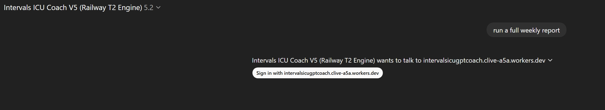
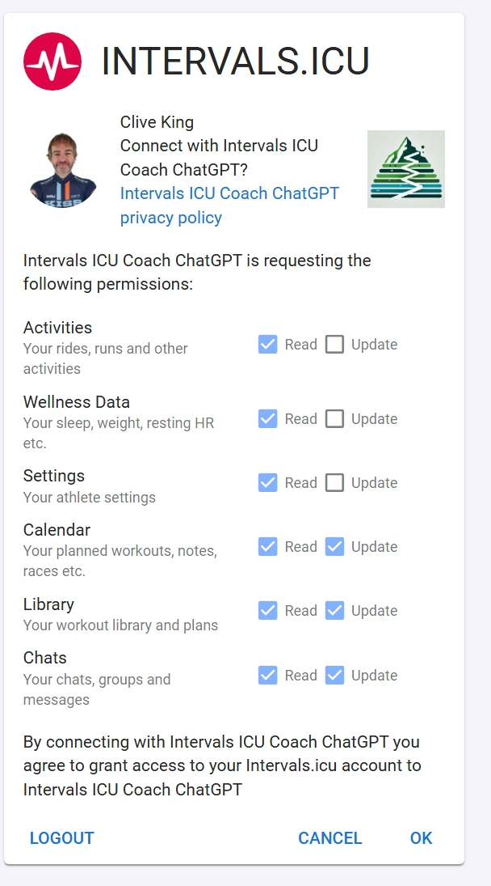
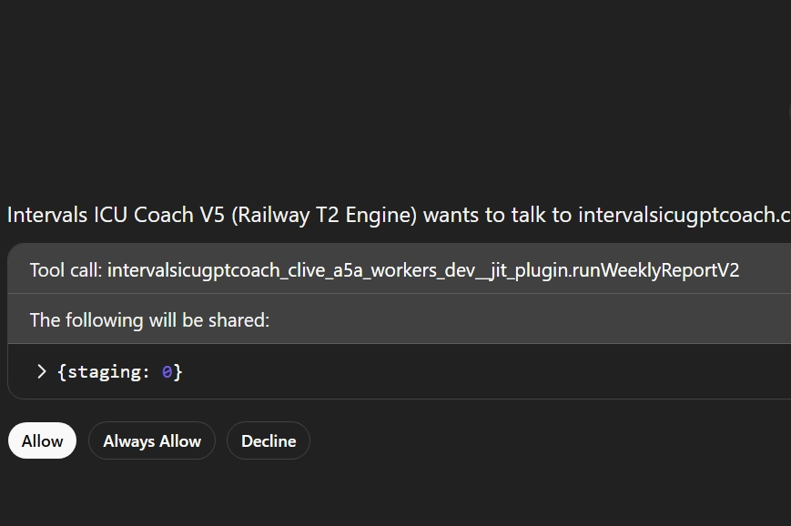
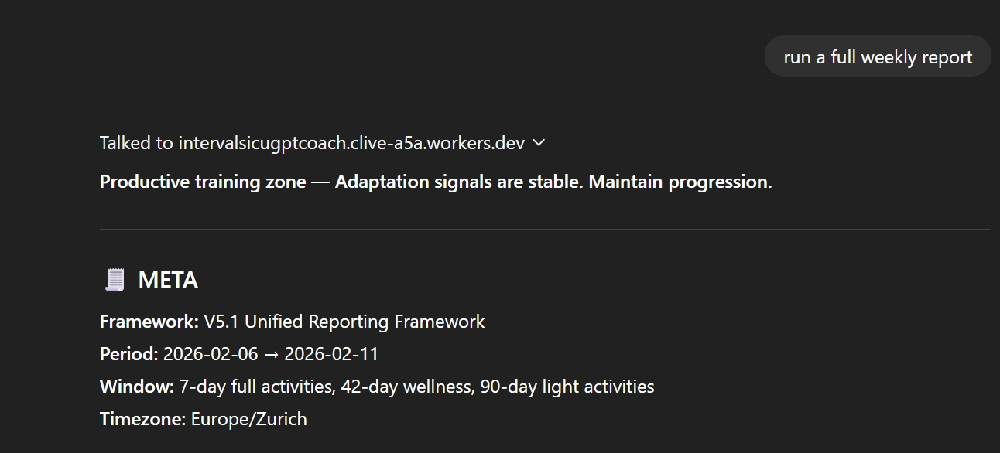

Coach GPT App
Coach GPT App
⚙️ First-Time Setup
Follow these steps to connect your Intervals.icu account and generate your first training report in montis.icu Coach App. The entire setup takes less than one minute.
🚀 Step-by-Step Setup
Step 1 — Open the Coach
Open the Montis.icu Coach App inside ChatGPT, click on this link in a web browser Intervals ICU Coach V5 and type or click "run a weekly report" and the following sign in prompt will appear, click sign in. This will redirect you to sign into Intervals.icu or if already signed in it will move to step 2.
Step 2 — Connect your Intervals.icu account
When prompted, click OK - to Connect Intervals.icu and approve access, do not uncheck any items. This allows the coach to read your training data securely and create new calendar events.
Step 3 — Return to ChatGPT
After authorization, you will be redirected back to ChatGPT, it will flash up a green message stating "connected", then prompt the following: Click always allow to stop this happening on every request.
Step 4 — Run your first report
It will now continue to show your report
You should now see your first training summary.
⚠️ Common Setup Issues
Athlete profile missing or account not connected
This means the OAuth connection was not completed.
- Reopen the Coach link above and start with step 1. Try a different web browser or clear cache/cookies if you are having issues
- Click sign in to connect Intervals.icu
- Approve access "allow always"
- Run the report again
STRAVA activities are not available via the API
This means your activities exist only in Strava, and Intervals cannot access the required training metrics.
To fix this, connect a direct recording source:
- Garmin
- Wahoo
- Zwift
- TrainerRoad
- Upload FIT files directly
Explanation: Why Strava-only accounts don’t work →
📊 Data Requirements
The coach works best when your account has:
- Activities with time, distance, and training load
- A connected device or training platform
- Optional wellness data for recovery analysis
🧪 Run a Data Quality Check
If your report looks incorrect, empty, or missing activities, run a quick data quality audit.
After you have connected. In ChatGPT, type:
run data quality reportThis report checks:
- If your athlete profile is connected correctly
- If activities are available
- If training load, heart rate, and power data exist
- If wellness data is present
- If any sources are missing or incomplete
The report will return a data quality score and highlight actions to fix any issues.